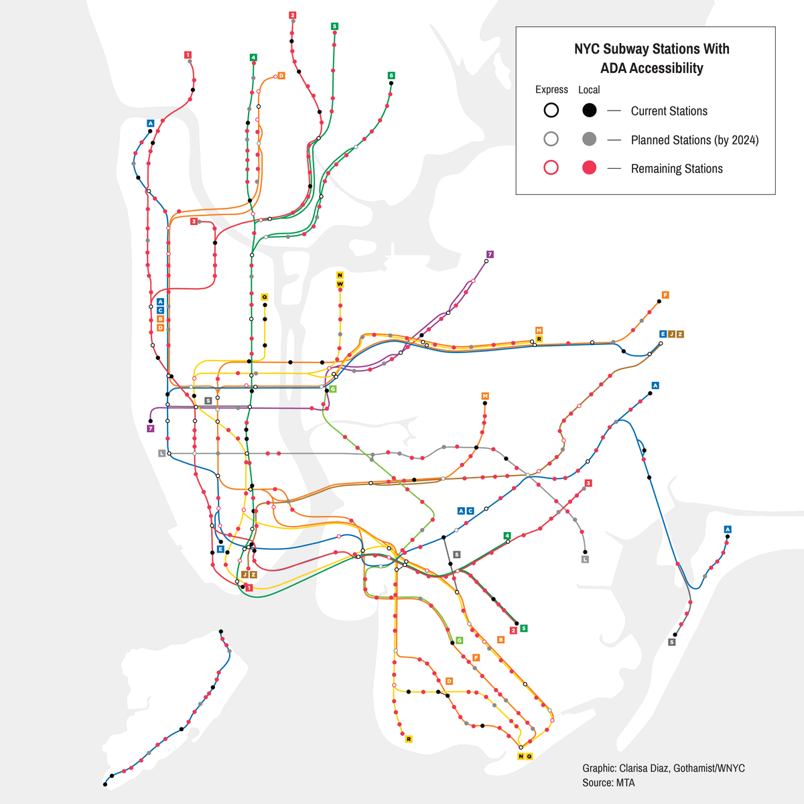

The New York City public transit system serves all five boroughs via bus, ferry, and the subway systems. The NYC subway system functions under the Metroplitan Transit Authority, better known as the MTA.
According to www.subwayridership.nyc, the New York City subway system averaged more than 140 million riders per year. They travelled among the city’s 472 stations, spread across all five boroughs. Of those 472 stations, just 126 (~27%) are fully accessible. Let that sink in; Our city hosts the busiest subway system in the entire United States, but less than a third of our stations are equipped with accommodations necessary for disabled individuals to safely navigate it.
The Gothamist, a New York City news publication, states "The worst line in the city for accessibility is the G, followed by the W, J, R, and N lines. “You need a subway stop at the beginning and end of your trip. So if you can only get to 40% of the stations at the beginning and 40% at the end, you can only make 16% of the trips an able-bodied person can make on the same line,”
Metropolitan Transit Authority. “Wheelchair-Accessible Sign.” MTA Accessibility, https://new.mta.info/accessibility.
Why Are Accesible Stations Necessary?
The MTA determines which stations receive accessibility upgrades first based on the following criteria: Coverage, Destinations, Ridership, Demographics, Transfers, Constructability, and Cost. This has led to long-distance gaps between accessible stations, especially in marginalized communities, that can make it incredibly difficult to navigate for riders with diabilities.
The MTA's lack of accessible features is not only detrimental to the health and wellbeing of populations with disabilities, but it can pose a threat to all riders in general. According to the New York Times, tragedy struck the Seventh Avenue-53rd Street Station as a mother fell to her death while trying to carry a stroller up a flight of stairs. The station did not host any service elevators, ramps, or wheelchair accessible entrances, which forced those in need to either travel to a furthher station, or risk climbing several flights of stairs.

“Infographic: How Much of the NYC Subway Is Accessible?” Gothamist, gothamist.com/news/infographic-how-much-nyc-subway-accessible.
What Do "Accessibility Features" Look Like?
U.S. District Judge Edgardo Rampos approved a "settlement to a class action lawsuit" against the MTA that requires 95% of stations to be outfitted with accessibility upgrades by 2055. Within these lawsuits, it was determined that the MTA was in direct violation of basic human rights, as well as Title II of the americans with Disability act. As a result, a vast majority of subway stations will boast the following features: